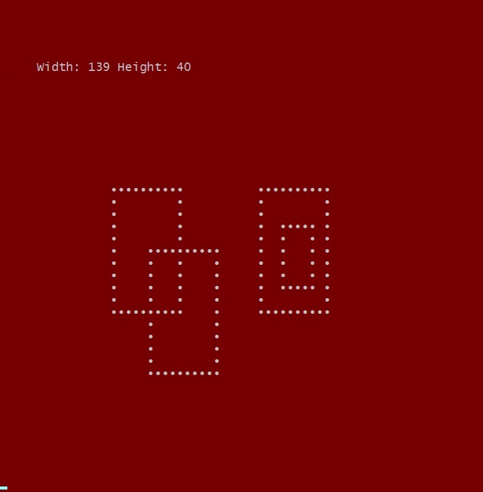
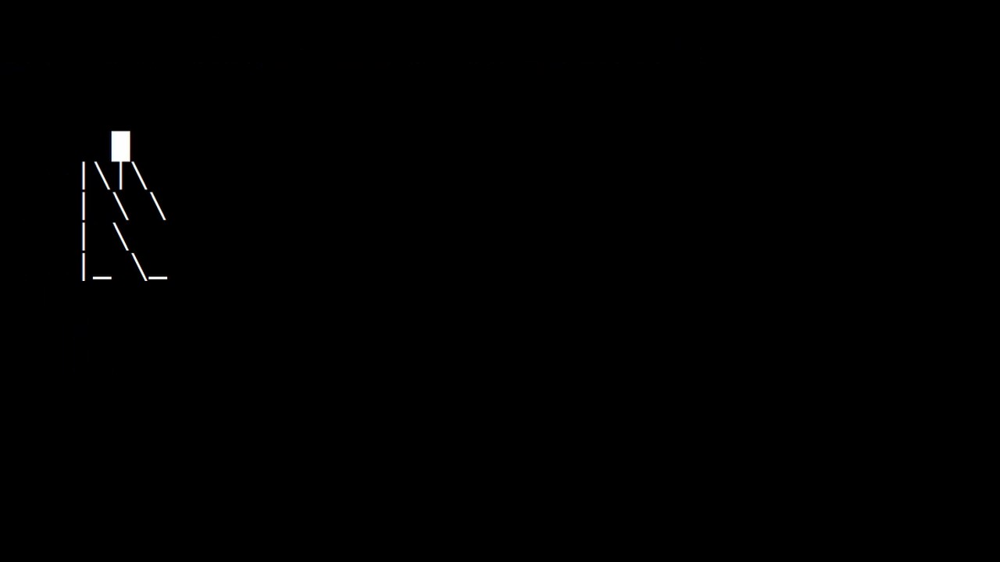
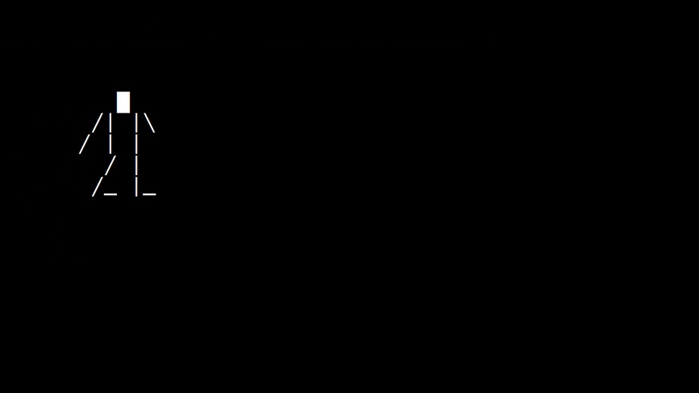

[3:1:3-4 Metodología]
¿Cómo llegar a crear una solución?
"Encontrar una solución consiste en construir un curso de acciones que transformen su situación actual en una donde su objetivo se ha logrado."
¿Cómo lo hacemos?
- Descomponer o desconstrucción de la solución en "partes" de su funcionalidad.
- Investigar posibilidades para cada pieza
- Hacer pruebas/prototipos, encontrar ejemplos, código, librerías etc.
- Por cada parte proponer como, con que tecnología y funcionalidad se puede implementarlo
- Diseñar como estructurar la solución y el código
- Implementar y Verificar
- Optimizar
- Entregar o poner en producción
Dibujo proyecto
Descomponer la solución en "partes" de funcionalidad
¿Qué sabemos que vamos necesitar?

Análisis y desconstrucción
¿Qué debería hacer?
- Pintar algo en la consola
- Cambiar color de texto y fondo
- Animar lo que pintamos => Animación
- Alguna partes se mueven, otras no
Animación - ejemplo



- Pintar algo en diferentes posiciones en la consola
Primer paso, lo básico
Empezamos pensar como vamos a ...
Conseguir una pantalla estática, sin animación
Así, como pintar algo en la consola!
Eso sabemos! con...
console.log(...);
y con un string así
"
Width: 80 Height: 26••••••••••
• • • •
• • • •
• • • ••••• •
• • • • • •
• •••••••••• • • • •
• • • • • • • •
• • • • • • • •
• • • • • ••••• •
• • • • • •
•••••••••• • ••••••••••
• •
• •
• •
• •
••••••••••
"
¿Qué queremos saber, o qué preguntas falta...?
¿Qué cosas hay?
¿Qué características tienen?
¿Qué tenemos que hacer con esto?
Nuestra pantalla es una consola
¿Qué es una consola, qué es lo que tiene, qué comportamientos exhibe una consola?
Una consola - cuadraditos en posiciones

Cada letra o carácter ordenados en filas y columnas
Podemos nombrar o referir a cada posición con sus coordenadas X y Y

Cada posición entonces tiene:
- ¿Qué pintar y dónde
- Carácter o símbolo
- Su color, primer plano y fondo
- En que lugar, coordinadas X, Y
¿Qué sabemos, y que NO sabemos?
Sabemos como pintar texto en la consola
No sabemos como cambiar el color del texto y fondo
A buscar!
"how to change the colors in windows console from javascript"

https://stackoverflow.com/questions/9781218/how-to-change-node-jss-console-font-color
Sabemos como pintar texto en la consola, pero...
¿Cómo vamos pintar figuras, como rectángulos?

Rect1 : X = 3, Y = 2, Width = 15, Height = 11
Rect2 : X = 12, Y = 4, Width = 19, Height = 17
Rectángulos
- Altura, anchura, y posición X y Y
- Son hecho de líneas
- Líneas verticales
- Líneas horizontales
Así primero necesitamos saber como pintar líneas horizontales, y verticales.
Rect1:
- Línea horizontal top: X=3, Y=2, Length=15
- Línea horizontal bottom: X=3, Y=13, Length=15
- Línea vertical left: X=3, Y=2, Length=11
- Línea vertical right: X=18, Y=2, Length=11
Rect2:
- Línea horizontal top: X=12, Y=4, Length=10
- Línea horizontal bottom: X=12, Y=21, Length=10
- Línea vertical left: X=12, Y=4, Length=17
- Línea vertical right: X=22, Y=4, Length=17